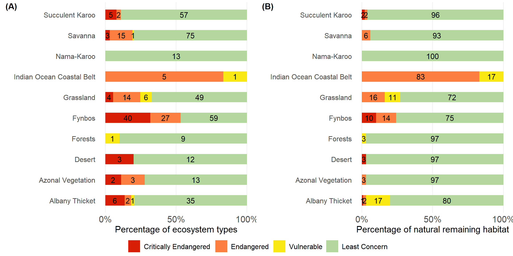
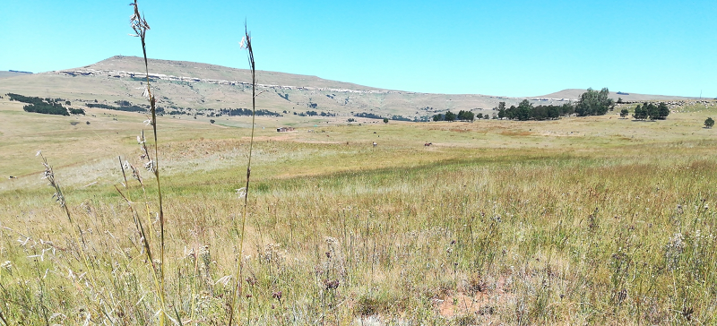
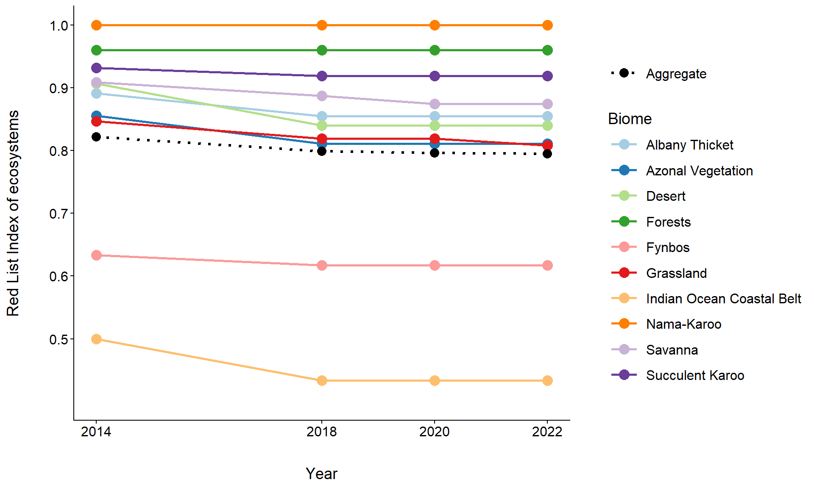

![]()

Habitat loss and the impact of invasive alien plant species are the dominant factors in determining ecosystem threat status in the terrestrial realm. Croplands established in the last two centuries have replaced and fragmented many ecosystem types, but in recent years expanding human settlements have become a key factor in Red List of Ecosystems assessments for the terrestrial realm.

30%
of 463 terrestrial ecosystem types
Threatened
of 463 terrestrial ecosystem types
Threatened
11%
of 980 945 km² natural extent
Threatened
of 980 945 km² natural extent
Threatened
Ecosystem threat status results
Ecosystem threat status is a headline indicator established to assess how close ecosystem types are to collapsing (losing vital aspects of their structure, function, or composition). For the NBA 2025 (as for the NBA2018) the IUCN Red List of Ecosystems (RLE) framework was applied systematically across all terrestrial ecosystem types. Ecosystem types are placed into one of four categories: Critically Endangered (CR), Endangered (EN), Vulnerable (VU) and Least Concern (LC); where CR, EN and VU together make up the threatened categories. The categories are based on assessments of quantitative and qualitative criteria (and thresholds) linked to ecosystem extent, ecological condition and threatening processes. Read more about this indicator on the About ecosystem threat status page.
Nearly one-third (141/463) of nationally recognised terrestrial ecosystems, representing 11% of the remaining natural habitat of South Africa, are threatened. Among these 63 are listed as Critically Endangered, 68 as Endangered, and 10 as Vulnerable (Table 1). Many of these ecosystems are concentrated in the key economic hubs, particularly in the south-western, north-eastern, and north-western regions of the country, where anthropogenic land-use activities and associated degradation pressures are major drivers of ecosystem change (Figure 1). Many of these threatened ecosystems have naturally restricted distributions, and accelerated habitat loss over the past three decades in these regions has compounded their vulnerability to collapse.
| Category (IUCN RLE) | Number of ecosystems | Percentage of threatened ecosystem types | Natural extent remaining within South Africa in 2022 (km²) | Percentage of the remaining natural extent | Percentage of total terrestrial landmass extent |
|---|---|---|---|---|---|
| Critically Endangered | 63 | 13.6% | 9175.151 | 0.9% | 0.7% |
| Endangered | 68 | 14.7% | 70047.437 | 7.1% | 5.5% |
| Vulnerable | 10 | 2.2% | 30431.996 | 3.1% | 2.4% |
| Least Concern | 322 | 69.5% | 871290.432 | 88.8% | 68.9% |
| Total | 463 | 100% | 980945.016 | 100% | 77.6% |
Historically, the main pressures on terrestrial ecosystems include habitat loss due to croplands, human settlements and plantation forestry. Since 1990, croplands and plantations have not expanded significantly but human settlements continue to expand; these pressures are key factors in the Red List of Ecosystem assessments. Pressures such as invasive alien plants and rangeland overstocking are also important; degrading ecosystem processes and functions. New data1–4 on the distribution of invasive alien plants over large portions of South Africa has contributed to improved assessments, especially of Fynbos and Grassland ecosystem types (Key Message A4). However, there is still no comprehensive, spatially explicit dataset on land degradation for the country, which limits the ability to fully assess and track these impacts. For a more about pressures in the terrestrial realm refer to the Terrestrial pressures page.

Biome level results
A pattern first highlighted in the 2018 RLE assessment5 remains evident: threat levels vary widely across South Africa’s biomes. Fynbos and Grassland are most affected by human-driven and degrading pressures. In Fynbos, 40 ecosystems are Critically Endangered and 27 Endangered, together accounting for 53% of its 126 types. Grassland has 24 (33%) threatened ecosystems, encompassing four Critically Endangered, 14 Endangered, and six Vulnerable. These threatened ecosystems cover about 25% of the remaining natural extent in Fynbos and 28% in Grassland. The Indian Ocean Coastal Belt is the most threatened biome, with all its ecosystem types listed as threatened. Other biomes face moderate risk, including Albany Thicket (nine threatened ecosystems, 20% of remaining extent) and Savanna (19, 7%). The Nama-Karoo is the least threatened, reflecting relatively lower pressure on its ecosystems (Table 2, Figure 2).
| Biome | Critically Endangered | Endangered | Vulnerable | Threatened ecosystem types | Least Concern | Total |
|---|---|---|---|---|---|---|
| Albany Thicket | 1% (6) | 1.8% (2) | 17.4% (1) | 20.3% (9) | 79.7% (35) | (44) |
| Azonal Vegetation | 0% (2) | 2.7% (3) | 0% (0) | 2.8% (5) | 97.2% (13) | (18) |
| Desert | 3.2% (3) | 0% (0) | 0% (0) | 3.2% (3) | 96.8% (12) | (15) |
| Forests | 0% (0) | 0% (0) | 3.3% (1) | 3.3% (1) | 96.7% (9) | (10) |
| Fynbos | 10.4% (40) | 14.5% (27) | 0% (0) | 24.9% (67) | 75.1% (59) | (126) |
| Grassland | 0.4% (4) | 16.3% (14) | 10.8% (6) | 27.5% (24) | 72.5% (49) | (73) |
| Indian Ocean Coastal Belt | 0% (0) | 83.4% (5) | 16.6% (1) | 100% (6) | 0% (0) | (6) |
| Nama-Karoo | 0% (0) | 0% (0) | 0% (0) | 0% (0) | 100% (13) | (13) |
| Savanna | 0.2% (3) | 6.4% (15) | 0.2% (1) | 6.8% (19) | 93.2% (75) | (94) |
| Succulent Karoo | 1.8% (5) | 2.3% (2) | 0% (0) | 4.1% (7) | 95.9% (57) | (64) |
Although most of South Africa’s ecosystems remain in the Least Concern category, this does not imply they are free from drivers of ecosystem change. RLE assessments in the terrestrial realm will improve over time as data on ecosystem condition within forests and rangelands (including much of the Grassland, Savanna, Succulent Karoo, Nama-Karoo and Desert biomes) are gathered, validated and incorporated.
Provincial level results
Similarly, threat levels also vary considerably across the nine provinces of South Africa. Gauteng, the country’s economic hub, has the highest share of threatened habitat by extent (52%), followed by KwaZulu-Natal (39%) and Mpumalanga (34%). In the Western Cape, Limpopo and North West approximately 15% of the remaining habitat is categorised as threatened, though there are many more threatened ecosystem types in the Western Cape, a product of the extremely high landscape and plant diversity. In contrast the Northern Cape, with its vast arid landscapes has only 11 threatened ecosystems (covering less than 1% of the remaining natural habitat), making it the least threatened province in the country, however, rapidly expanding mining footprints on the coast and interior combined with landscape level changes in plant community composition (linked to a combination of rangeland management, drought, climate change), are cause for concern (Table 3).
| Province | Critically Endangered | Endangered | Vulnerable | Threatened ecosystem types | Least Concern | Total |
|---|---|---|---|---|---|---|
| Eastern Cape | 0.4% (8) | 6.9% (13) | 5% (4) | 12.3% (25) | 87.7% (81) | (106) |
| Free State | 0.5% (1) | 3.9% (1) | 7.5% (3) | 11.9% (5) | 88.1% (32) | (37) |
| Gauteng | 2.6% (1) | 21.6% (7) | 28.2% (2) | 52.4% (10) | 47.6% (11) | (21) |
| KwaZulu-Natal | 1.5% (4) | 23.8% (15) | 14.1% (5) | 39.4% (24) | 60.6% (35) | (59) |
| Limpopo | 0.1% (1) | 14.8% (7) | 0.6% (2) | 15.4% (10) | 84.6% (45) | (55) |
| Mpumalanga | 0% (0) | 20.4% (9) | 13.8% (2) | 34.2% (11) | 65.8% (44) | (55) |
| North West | 0% (1)1 | 12% (7) | 2.4% (2) | 14.4% (10) | 85.6% (28) | (38) |
| Northern Cape | 0.5% (10) | 0.1% (1) | 0% (0) | 0.6% (11) | 99.4% (114) | (125) |
| Western Cape | 5.4% (42) | 9.7% (30) | 0% (0) | 15.1% (72) | 84.9% (102) | (174) |
| 1 North West has one Critically Endangered ecosystem type, but extremely restricted in area that it contributes less than 0.05% of the province’s remaining natural habitat. | ||||||
Red List Index of Ecosystems
The Red List Index of Ecosystems (RLIe) tracks changes in ecosystem threat status over time6,7. The methods focus the indicator on genuine changes in status by accounting for the impact of improved data at later time points. RLIe scores range from 0 (all ecosystems collapsed) to 1 (all ecosystems classified as Least Concern), providing a clear, comparable measure of ecosystem health across time and space. RLIe was calculated for 463 terrestrial ecosystems at the biome level, across four RLE assessment periods: 2014, 2018, 2020, and 2024. The emerging trends reveal a complex picture of both resilience and vulnerability across South Africa’s biomes.
The Indian Ocean Coastal Belt has experienced the steepest decline and has the lowest overall RLIe, falling from 0.50 in 2014 to 0.43 in 2024. All ecosystem types in this biome are threatened and over time they are moving into higher risk categories. This steep downward trend reflects growing pressures from land-use conversion, including the expansion of croplands, urban development, and plantations. The Fynbos Biome, renowned for its exceptional biodiversity, faced substantial histroical pressures resulting low RLIe scores (0.62) but these are reasonably stable since 2018 suggesting that the main drivers of change, particularly agricultural pressure in lowland areas, have been entrenched for many years. In the Desert, Albany Thicket and Grassland biomes there are fewer threatened ecosystems and hence slightly higher RLIe (~0.8) but these scores dropped substantially since 2014, suggesting accelerating pressures.
At the national level, South Africa’s overall RLIe declined slightly from 0.82 to 0.79 between 2014 and 2024, signaling a slow but steady increase in ecosystem threat. The divergent trajectories seen across individual biomes highlight the importance of targeted, biome-specific conservation efforts to address the primary drivers of change shaping ecosystem threat status across the country.

Approach
The terrestrial RLE assessment follows the IUCN RLE 2.0 in an approach described by Skowno & Monyeki, 20215, using additional input data to assess a wider range of criteria. New land cover data, invasive alien plant data and ecosystem condition data from two additional regions were employed1–4,8,9.
Technical documentation
Code repository: https://github.com/askowno/RLE_terr
Key publications
Skowno, A.L.; Monyeki, M.S. South Africa’s Red List of Terrestrial Ecosystems (RLEs). Land 2021, 10, 1048. https://doi.org/10.3390/land10101048
Rowland, J.A., Bland, L.M., Keith, D.A., Juffe-Bignoli, D., Burgman, M.A., Ferrer-Paris, J.R., Miller, R.M., Skowno, A.L., Nicholson, E., 2020. Ecosystem indices to support global biodiversity conservation. Conservation Letters 13, 11. https://doi.org/10.1111/conl.12680
Acknowledgements
Thanks to Agricultural Research Council’s Alanna Rebelo, and post grad students Liam Cogill and Thandeka Skosana, for making their data on invasive alien plants available for the ecosystem assessments of the NBA 2025. Read more about their work on the MAPWAPS home page. Thanks also to Andrew Wannenburgh (DFFE) and Johann Kotze for sharing the National Invasive Alien Plan Survey data. Tim Kirsten and Wesley Bell (UCT) kindly shared their PhD work on degradation in the Karoo. Thanks to Cape Nature (Boyd Escott), Mpumalanga Parks and Tourism (Mervyn Lotter), Ezemvelo-KZN Wildlife (Debbie Jewitt), GDARD (Marc Leroy), City of Cape Town (Charmaine Oxtoby and Johnathn Bell) for sharing provincial / metro land cover and condition data.
Recommended citation
Monyeki, M.S. & Skowno, A.L. 2025. Ecosystem threat status. National Biodiversity Assessment 2025. South African National Biodiversity Institute. http://nba.sanbi.org.za/.
References
1. Kotzé, J.D.F. et al. 2025. Changes in the cover of selected invasive alien plant taxa between 2008 and 2023 in South Africa. Biological Invasions 27: 98. https://doi.org/10.1007/s10530-025-03558-9
2. Cogill, L. et al. MapWAPS invasive alien plant map for the Tugela catchment. https://doi.org/10.25413/SUN.25066151
3. Skosana, T. et al. Invasive alien plant map for the Sabie-Crocodile catchments. https://doi.org/10.25413/SUN.25050368
4. Rebelo, A. et al. BioSCape invasive alien plant map for the cape floristic region. https://doi.org/10.25413/SUN.27377211
5. Skowno, A.L. et al. 2021. Rates and patterns of habitat loss across South Africas vegetation biomes. South African Journal of Science 117: 1–5. https://doi.org/https://journals.co.za/doi/pdf/10.17159/sajs.2021/8182
6. Nicholson, E. et al. 2024. Roles of the Red List of Ecosystems in the Kunming-Montreal Global Biodiversity Framework. Nature Ecology & Evolution 1–8. https://doi.org/10.1038/s41559-023-02320-5
7. Rowland, J.A. et al. 2020. Ecosystem indices to support global biodiversity conservation. Conservation Letters 13: 11. https://doi.org/10.1111/conl.12680
8. Bell, W.D. et al. 2021. Regional land degradation assessment for dryland environments: The Namaqualand Hardeveld bioregion of the Succulent Karoo biome as a case-study. Land Degradation & Development 32: 2287–2302. https://doi.org/10.1002/ldr.3900
9. Kirsten, T. et al. 2023. A regional, remote sensing-based approach to mapping land degradation in the Little Karoo, South Africa. Journal of Arid Environments 219: 105066. https://doi.org/10.1016/j.jaridenv.2023.105066